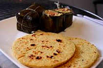
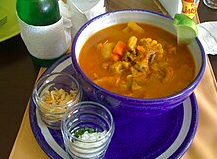
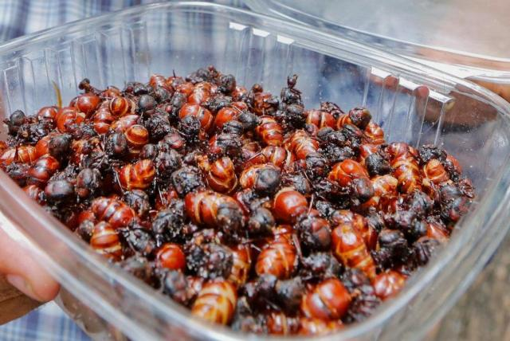
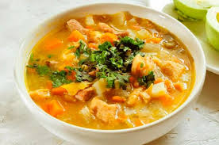

Los platos tradicionales en San Gil son:
* Mute
* Chicha
* Guarapo
* Cabro
* Pepitoria
* Carne oreada
* Masato de arroz
* Hormigas culonas
* Tamal santandereano
* Arepa santandereana
* Sopa de maíz blanco aderezado con otros granos
* Dulces elaborados de apio, limón, cidra, arroz y piña
* Sopa de arroz con gallina
* Pichon (sopa)
* Aji
* Mondongo
   